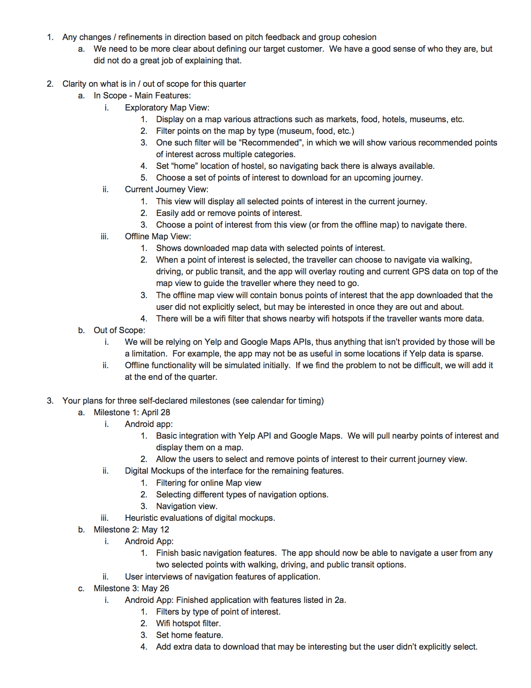
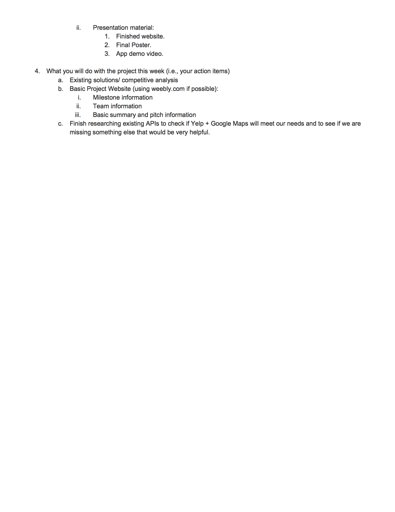

Weekly Updates
Lastest Update: May 19, 2015
Week #1 Week #2 Week #3 Week #4 Week #5 Week #6 Week #7Week 7 - May 12, 2015
Tuesday Milestone #2 Update:
We followed the advice given on last Thursday's Meeting and decided to hold off on development and go back to the drawing board. Over the weekend, we brainstormed some additional features that would make Serendipity more than just a trip navigation app. We did some user testing to get some initial feedback on which features was potentially more interesting than the others. Based on this feedback, we structured the presentation slides so that the more interesting ones were towards the end of our Milestone #2 presentation.
The feedback we received from the class confirmed that the Challenges and Traveler's Suggestions were the more interesting of the features. We would need to workout the details of this feature and provide some additional mockups.
We received an email from the teaching staff about where to go with our project for the rest of the quarter. Two possible paths include:
- - implement the navigation
- - mock more advanced features (particularly the challenges/Traveler's Suggestions feature)
May 14, 2015: Thursday Meeting
- Drop Messages - filter, up/down vote
- Video - 30 second voice over, demonstrate the interactions of the app with some teaser content
- functionality demo (context of the design - need to set that up)
- Testing - marketing research in a sense
- Heuristic high level testing towards the end after most of the development
- Tuesday standup - go over the plan to the class (let them know what we're up to), and have some implementation done
Week 6 - May 5, 2015
Tuesday 3x3 Update:

Three things we have done in the past week:
b. Manage My Journey
c. Offline View and Navigation
b. Moved Search button to the left side
c. Added "Serendipity" name to the top panel of app
Storyboards Presented:


Three things we will do this week:
Three things where we could advice or are blocked:
Feedback from Tuesday Class:
- a. Search Storyboard (a.k.a Explore Points of Interests)
- - Asking for the next destination to navigate to
- - default would be to navigate to the next place ont he list
- - have a button to edit the place to navigate to
- - Storyboard 2 = screens 2-4 set up a plan but @Storyboard 3 = the user is sorta in the middle of this plan, working through it like a checklist
- - maybe have a third state to indicate where they are in the plan
- - Need to take into account the schedules of the places (business hourse) - provide that meta detat on the journey list so that the user is aware of it
- - Add a "closing soon" note
- - Detours = need to be aware that journey is still available to navigate away from the path
- - Finding interesting places nearby
- - Filter out the noise for places the user wouldn't want to go to
- - Cut down on the number of places to see
- Note: Edit button needs to be removed from the Journey list view
5/7 Thursday Meeting Update:
ADVICE: find that one scenario that make Serendipity unique - think of it from a business perspective (understand the user, what other products do do - switching costs of current users)
Week 5 - April 28, 2015
Tuesday Milestone #1 Update:
We were able to finish our first milestone on time with updated mockups and working prototypes. We decided to switch development platform from Andriod to iOS because we had trouble implementing Google Place API for all Andriod devices. Most of the mockups were revised based on feedbacks we received from last week, and we added more screens based on user tasks. Here is our current progress and plan for the rest of this week.
Current Progress Relative to Milestone #1:
Plans For Milestone #2:
April 30, 2015: Thursday Meeting
- - TODO: FILL IN
Week 4
4/21 Tuesday 3x3 Update:
Three done:b. Intergrated map aspect.
c. (in-progress) Working on Places API intergration
Three will do:
b. Display current journey view.
Three blocker:
Initial Mockups:


Feedbacks on mockups:
- a. Rename "Home" to something else (like basecamp or pit stop) because “home” sounds like a permanent/long term place.
- b. fix the dropdown functionalities when setting a place to be the homebase
- c. Fix filter button to be consistent with other android apps.
- d. Use an up (^) arrow on the List pull up item to indicate to the user that functionality
April 23, 2015: Thursday Meeting
Week 3 - April 14, 2015
Project Proposal Presentation
We presented our revised proposal to the class. And based on the feedback, we made some modifications and submitted the updated project proposal.
April 16, 2015: Thursday Meeting - Review Project Proposal
- - TODO: FILL IN
Week 2 - April 7, 2015
Pitch Presentation
We presented our pitch idea to the class and submitted our project preferences. We'll be hearing back in a day or two for which project we'll be working on for the rest of the quarter.
WEDNESDAY UPDATE: Our project has been selected by the class! In addition, Tony is joining our team! For Thursday we need to send an email to the teaching staff on our initial project proposal.
Email we sent to the teaching staff:
 April 9, 2015: Thursday Meeting - Review Initial Pitch Proposal
- - address the interconnectivity aspect and address that
- - raw background -> invisible sync that would happen automatically
- - wifi hotspot aspect
- - locality -> hidden gems that would be missed when traveling
- - more than just a trip planner
- - Plan: too aggressive?
- - navigation aspect - especially in offline case - might be too difficult
- - use some pre-existing API's or plugins in Android
- - ***[1]*** figure out which tech pieces we need (vertical analysis)
- - minimal functioning prototype
- - ***[2]*** figure out what other points to leverage (interactive points)
- - Schedule
- - present milestones in class (Tuesday)
- - submit written copy (Wednesday)
- - ***[3]*** New name? Ideas?
- - Serendipity
- - Wanderer
- - Narrow range
- - do app for Seattle/or something similar where there are a lot of data points
- - harvest local data sources
- - Home-can be different from morning -> night
- - think about range
- - distance vs. interest
- - from Seattle Downtown to how far public transport reaches
- - Notes:
- - help Prof and TAs be aware to the fact that our group is 3 people
- - no weebly -> use these websites instead http://pixelarity.com or http://html5up.net
Week 1 - March 31, 2015
In this class, we will propose, design, and develop a high-fidelity interactive prototype. At the end of the quarter, we will deliver a complete interactive experience of our project. But first we began by producing an intial pitch. By next Tuesday, we will need to make a 3-5 minute pitch.
After looking through a variety of projects from past quarters of CSE 440, past HCDE capstone projects, and past Informatics capstone projects, we are interested in the following two projects:- Why Search Twice (https://ischool.uw.edu/capstone/projects/2013/why-search-twice#toggle)
- Journey By Expedia (http://hcde.uw.edu/files/imgs/capstone/2015/Capstone-MS-14-team-journey.pdf)
April 2, 2015: Thursday Meeting - Review Pitch Ideas
- What is the problem?
- What existing understanding of the problem has been developed?
- What is the unique design insight?
- What is the interesting interactive question?
- What might the group plan to accomplish?
- What might a group explicit decide to omit?
Overall, we received positive feedback from James and the TAs on our pitch idea for Journey. Therefore, we plan to pitch this idea to the class on Tuesday.